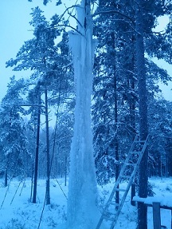

En 6-8 meter hög tall med bra och tjock is WI5. Dock inte säkert att isen återkommer varje år. Anmarsch upp från Hovlandavägen 100.
--
Bultfeber
25 februari 2011 kl. 14.33 (CET)
Ingen känd accessproblematik, men bada inte i badtunnan utan att ta med egna öl.
Kategori:Is
Copyright (C) Permission is granted to copy, distribute and/or modify this document under the terms of the GNU Free Documentation License, Version 1.3